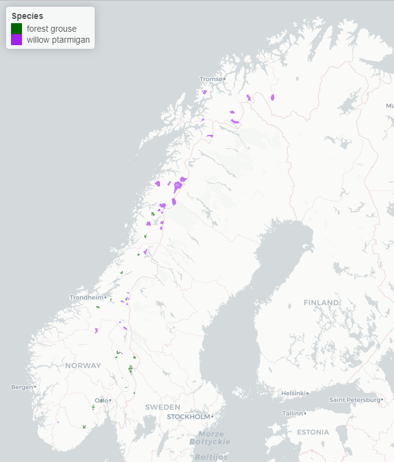
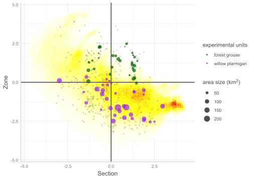

Experimental harvest of ptarmigan, black grouse and capercaillie:
Summary of planning stage
Erlend B. Nilsen , Lasse Frost Eriksen , Christoffer Høyvik Hilde , Matthew Grainger
Siteres som:
Nilsen, E.B., Eriksen, L.F., Høyvik Hilde, C., Grainger, M.J. 2025. Experimental harvest of ptarmigan, black grouse and capercaillie: Summary of planning stage. NINA Rapport 2570 NINA Rapport 2570. Norsk institutt for naturforskning. http://hdl.handle.net/11250/fås av bibliotek
Kvalitetsgranskere: xx
Ansvarlig signatur: Forskningssjef [fylles ut av forskningssjefen] (sign.)
Sammendrag
Tekst inn her, et kort resymé av innholdet. Teksten i sammendraget er søkbar i databaser og på nett, og er viktig for at rapporten skal fanges opp ved søk.
Seksjoner og tomme rader mellom dem er litt tricky å få til i YAML-avsnittet, men det kan gjøres slik. Tomme rader i forordet kan også lages på samme måte.
Abstract
Tekst inn her, et kort resymé av innholdet. Teksten i sammendraget er søkbar i databaser og på nett, og er viktig for at rapporten skal fanges opp ved søk.
1 Introduction
Sustainable harvest management of our game resources is a key goal in Norwegian nature management. In order to achieve sustainable management, it is generally recommended to use an adaptive approach, where one actively searches for new knowledge that is necessary to fill existing knowledge gaps (Johnson et al. 1997). In the last couple of decades a series of environmental challenges have arisen, which are expected to largely affect hunting management. These challenges are largely linked to climate change and other man-made changes in the natural environment, such as habitat loss and degradation, but also changes in other components of the socio-ecological systems wildlife species are part of and which are expected to influence how sustainable management is defined (Eriksen et al. 2018; Bowler et al. 2020; Henden et al. 2020; Månsson et al. 2023). With increased focus in society on the loss of biological diversity on a global and national scale, one can further expect increased expectations in society that recreational hunting is carried out in a sustainable way with little risk of overharvesting. This will lead to stricter requirements for documentation of sustainability and data bases will increase . More recent conceptual studies of adaptive management have discussed how such new “settings” not only force new knowledge needs, but that it can also lead to changed objectives and measurement parameters for adaptive management (Månsson et al. 2023). In the light of the drastic changes happening across the worlds’ ecosystems, largely driven by anthropogenic activity - it is vital to simultaneously investigate and quantify the effects of harvest and environmental variability on wildlife populations.
A central concept for predicting the effect of hunting on wildlife populations is the relationship between additive hunting mortality (which comes in addition to other mortality) vs compensatory hunting mortality (which is compensated by other mortality being reduced in proportion to the harvest mortality - see Péron (2013) and Sandercock et al. (2011)). Our knowledge of this comes largely from experimental studies carried out at the end of the 1990s under the auspices of the “Rypejaktprosjektet” (with Hans Chr. Pedersen, NINA, as project leader). Here it was concluded that hunting mortality was partially compensatory at low harvest rates, while it was additive or even super-additive at high harvest rates (Pedersen et al. 2004; Sandercock et al. 2011). This knowledge base was produced by carrying out large-scale experimental studies, where the hunting harvest (respectively 0, 15 and 30%) was distributed randomly between the study areas. Effects were investigated both directly in terms of survival (using radio-tagged birds - see Sandercock et al. (2011)) and indirectly via population densities (see Pedersen et al. (2004)). This project focused exclusively on willow ptarmigan (Lagopus lagopus), and no similar knowledge exist for black grouse (Lyrurus tetrix) and capercaillie (Tetrao urogallus).
Whether results from the former large scale experiment is transferable in time (i.e. to the current environmental conditions) and to other species (i.e. black grouse and capercaillie) is an empirical question that cannot be answered directly by existing data. For example, one can expect that climate change will have significant effects on the trophic interactions that largely affect grouse population dynamics and densities Henden et al. (2020). Changes in these interactions will have the potential to directly affect grouse populations’ potential to compensate for hunting mortality (see discussions in e.g. Péron (2013)). Similarly, large changes in the size of the grouse population could have similar effects, since the degree of compensation can be closely linked to density dependence (Sinclair and Pech 1996). One way to address these uncertainties would be to conduct an conceptual replication of the well-known experiments carried out in the 90-ties. Such conceptual replication studies (sensu Nakagawa and Parker (2015)) are rare in ecology (Fraser et al. 2020), but have recently been strongly recommended to examine the validity and generalisability of previously conducted studies (Nakagawa and Parker 2015; Fraser et al. 2020).
However, before such a replication is carried out it is a prerequisite that an up-to-date mapping of the research-based literature on the sustainable management of galliformes from a climate change perspective is conducted (see also Grainger et al. (2020)), to ensure that the replication rests on the best available knowledge. In addition, a thorough planning of how best to design such an experiment in a way that both sample sizes and climatic gradients are sufficiently estimated to close the most pressing knowledge gaps. This report is a part of the planning stage of such a project, where the intent is to apply experimental harvest treatments to populations of willow grouse, black grouse and capercaillie in Norway. It includes two main sections:
A systematic mapping of the literature related to effects of harvest on galliformes
A thorough evaluation of the experimental design including both the sampling of study subjects and assignment of treatment levels.
We will first present the results from the systematic mapping of the literature, and then the evaluation of experimental design. In the final chapter, we will present a detailed description of the suggested design for the new harvest experiment.
2 Systematic mapping of the literature
This systematic map is produced as part of the preparation of a large-scale harvest experiment in Norway, as outlined above. We aimed to identify studies that have quantitatively assessed the effects of legal harvest (i.e., managed hunting) on galliformes to ensure that the planned experimental studies on the sustainability of galliform hunting are based on the best available evidence. This mapping aims to identify, categorise, and synthesise existing research on how hunting mortality interacts with ecological and environmental factors. By systematically compiling relevant studies, we provide a foundation for assessing knowledge gaps and determining the generalisability of past research.
The protocol i.e., the workflow of identifying, categorising and analysing the exisiting literature, was prepared prior to conducting the search. Here, we include the relevant information and report any deviation from the protocol.
2.1 Objective of the review and research question
The main objective of this review is to map the available literature on effects of managed harvest/hunting on species of the order Galliformes.
2.2 Methods
2.2.1 Search for articles
We used a PIO (Population, Intervention, Outcome) question structure to help develop the search strategy.
Population (P): Bird species within the order Galliformes
Intervention (I): Legal (managed) hunting or harvest
Outcome (O): The ecological impacts of (managed) hunting on population dynamics, demography, genetics or behaviours
We searched for academic literature (publications) in two search platforms; Web of Science and lens.org. Specifically, we searched the Web of Science Core Collection (WOS.SCI: 1987 to 2025, WOS.AHCI: 1987 to 2025, WOS.ESCI: 2020 to 2025 and WOS.SSCI: 1987 to 2025) using the NINA library subscription and the following search string:
((TS=(galliform* OR grouse OR ptarmigan OR Phasianidae OR pheasant OR “lagopus lagopus” OR “lagopus muta” OR “wild turkey” OR “bobwhite” OR partridge))
AND (TS=(“hunt” OR “harvest”)))
AND SU=(“Ecology” OR “Wildlife” OR “Environment”)
For lens.org we used the following search string:
(abstract:(“galliform” OR “grouse” OR “ptarmigan” OR “Phasianidae” OR “pheasant” OR “lagopus lagopus” OR “lagopus mura” OR “wild turkey” OR “bobwhite” OR “partridge”) OR title:(“galliform” OR “grouse” OR “ptarmigan” OR “Phasianidae” OR “pheasant” OR “lagopus lagopus” OR “lagopus muta” OR “wild turkey” OR “bobwhite” OR “partridge”)) AND abstract:(“hunt” OR “harvest”) OR title:(“hunt” OR “harvest”) AND field_of_study:(“Ecology” OR “Wildlife” OR “Environment”)
In addition, a backward and forward citation chasing (using CitationChaser) was performed based on the three first benchmark papers listed below (Pedersen et al. 2004; Sedinger and Rotella 2004; Sandercock et al. 2011).
2.2.2 Benchmark papers
The following benchmark papers was used to assess the effectiveness of the search string. We expected to find all these papers in a review of this question. We recorded if each benchmark paper is found in the searches (WoS and lens.org).
Sandercock, B. K., E. B. Nilsen, H. Brøseth, and H. C. Pedersen. 2011. Is hunting mortality additive or compensatory to natural mortality? Effects of experimental harvest on the survival and cause-specific mortality of willow ptarmigan. Journal of Animal Ecology 80:244-258.
Pedersen, H. C., H. Steen, L. Kastdalen, H. Brøseth, R. A. Ims, W. Svendsen, and N. G. Yoccoz. 2004. Weak compensation of harvest despite strong density-dependent growth in willow ptarmigan. Proceedings of the Royal Society of London Series B-Biological Sciences 271:381-385.
Sedinger, J.S. & Rotella, J.J. 2005. Effect of harvest on sage-grouse Centrocercus urophasianus populations: what can we learn from the current data? Wildlife Biology, 11, 371–375.
Pedersen, Å. Ø., E. M. Soininen, S. Unander, M. H. Willebrand, and E. Fuglei. 2014. Experimental harvest reveals the importance of territoriality in limiting the breeding population of Svalbard rock ptarmigan. European Journal of Wildlife Research 60:201-212.
Brøseth, H., J. Tufto, H. C. Pedersen, H. Steen, and L. Kastdalen. 2005. Dispersal patterns in a harvested willow ptarmigan population. Journal of Applied Ecology 42:453-459.
Brøseth, H., E. B. Nilsen, and H. C. Pedersen. 2012. Temporal quota corrections based on timing of harvest in a small game species. European Journal of Wildlife Research 58:797-802.
Brøseth, H., and H. C. Pedersen. 2000. Hunting effort and game vulnerability studies on a small scale: a new technique combining radio-telemetry, GPS and GIS. Journal of Applied Ecology 37:182-190.
Henden, J.-A., R. A. Ims, N. G. Yoccoz, E. J. Asbjørnsen, A. Stien, J. P. Mellard, T. Tveraa, F. Marolla, and J. U. Jepsen. 2020. End-user involvement to improve predictions and management of populations with complex dynamics and multiple drivers. Ecological Applications n/a:e02120.
Small, R.J., Holzwart, J.C. & Rusch, D.H. 1991. Predation and hunting mortality of ruffed grouse in central Wisconsin. Journal of Wildlife Management, 55, 512–520.
In our searches, all benchmark papers were found except…. XXX , which was not indexed by any of the databases that we searched. Overall, this is found to be satisfactory.
2.2.3 Article screening
We used the online screening tool Rayyan (ref) for screening the results of the article search. A pre-determined inclusion/exclusion criteria was used when screening eligible studies. Excluded papers will be shown in a flowchart using the ROSES flow chart (Haddaway et al. 2018). Included studies was de-duplicated based on DOI and title matches using the deduplication tool in Rayyan.
After de-duplication, title and abstract screening was done using the eligibility criteria. If uncertainty remained, the full text version was visited to confirm/reject. A set of 54 papers was reviewed by three members of the review team to ensure consistency.
2.2.4 Eligibility criteria
We reviewed scientific articles from all parts of the world covering all galliform species. Studies of both native and introduced populations were eligible. Studies of all spatial scales and across all relevant ecosystems were considered eligible. Only studies documenting the effects of legal and/or managed harvest on galliform populations were eligible. Studies of poaching were not eligible. The effects must be assessed quantitatively for the study to be eligible. Eligible outcomes included effects of harvest on population abundance, density, sex- and age structure, recruitment, survival, behaviour, genetics, physiology and distribution. Studies focusing on lead (or heavy metal) poisoning or content in wild birds from shooting were not eligible. Both observational and experimental study designs are eligible. Mathematical simulation studies are eligible.
2.2.5 Title and abstract screening stage
We used a decision tree to make decisions about inclusion and exclusion at the Title and Abstract stage. The tree is presented in the protocol and in the Appendix of this report. The decision tree helped the reviewers to make decisions about eligibility of each paper in a structured way. Duel screening was carried out on 20 % of papers (n = 183). Agreement between reviewers was assessed using the kappa statistic which was over 0.7.
2.2.6 Full text eligibility
Papers included at the Title and Abstract stage was taken forward to the full text screening stage. A RIS file of included articles was downloaded from Rayyan and added to a Zotero database. PDF versions of each paper was searched using Zotero’s “Find Available PDF” tool, ResearchGate, Google Scholar and Google. If a PDF was not available online (or was not open to us), the paper was excluded at this stage of the review. Full text papers was excluded if they are/did not:
- Written in English, Norwegian, Swedish or Danish
- Focus on species from order galliformes
- Document the effect of legal or managed hunting on galliformes
- Assess the effect of hunting quantitatively
2.2.7 Data coding
From all papers that met the eligibility criteria, we extracted key variables (aka “data coding”). In addition to metadata about the publication (publication year, journal name etc.) we extracted from the full-text information about study species, study area location and extent, research approach and experimental design, outcome variables and to which extent the paper reported harvest rates and to which extent the study assessed whether harvest was additive or compensatory. For outcome variables, we used the Essential Biodiversity Variable (EBV) framework (refs), and coded both for EBV class (high order classification) and EBV name (lower order classification). A detailed description of data coding is presented in the protocol and in the Appendix.
2.3 Results from the literature review
Our searches returned 1023 articles in total, with 542 from Web of Science, 112 from lens.org, 9 benchmark articles and 192 from backward-, and 168 from forward citation chasing from the three benchmark articles mentioned above (Pedersen et al. 2004; Sedinger and Rotella 2004; Sandercock et al. 2011). Of these 173 were duplicates which were removed from the database. We screened the remaining 850 articles for eligibility at the Abstract and Title stage. Of the 850 included articles, a total of 200 were moved further to full-text screening, of which 166 papers that had an “include” decision and 34 a “maybe” decision. There were 9 conflicts (where reviewers disagreed on eligibility). All these papers were taken through to the fulltext stage and assessed for eligibility. Exclusion decisions (650 records) were due to the research not focusing on the effects of legal or managed hunting (365 records), not being focused on galliformes (276 records), not quantitative (23 records), abstract not found online (16 records), or abstract not available in English, Norwegian, Swedish or Danish (3 records).
At the fulltext stage 90 articles were excluded (3 with no available pdf, 6 not focused on galliformes, 12 not assessing the effects of hunting quantitatively and the rest, 61, not documenting the effects of legal harvest). This left 129 papers that went forward to the data extraction stage.
-01.png)
Legal hunting of galliformes has been the subject to extensive research. In our searches we identified studies published as far back as 1963, but we are aware that research on this topic was carried out even before that, however these studies were not covered by our searches. The number of studies per year peaked in 2020 (8 studies) and the long-term average was 2.93 studies per year (Figur 2).
The most common geographic location for studies was in the USA (99 studies), followed by Norway (16) and the UK (9) (Figur 3). In the USA studies were carried out in 33 States (Alaska, California, Colorado, Florida, Georgia, Idaho, Illinois, Indiana, Kansas, Kentucky, Louisiana, Maine, Michigan, Mississippi, Missouri, Montana, Nevada, New York, North Carolina, Ohio, Oklahoma, Oregon, Pennsylvania, Poland, Rhode Island, South Carolina, South Dakota, Tennessee, Texas,Utah,Virginia, West Virginia, Wisconsin).

The extent of the study areas were predominately regional or local, with very few studies at the site level (Figur 4). Few studies were of “national” or multinational scale. Note that following our definition used here, regional studies typically cover one mountain area or a county, whereas a local study would cover a municipality or parts of a municipality. Note that this contrasts previous calls for more large-scale research (Estes et al. 2018) that might be needed to uncover the ecological dynamics and provide input to management and natural resource management policy at larger spatial scales.

Most studies covered in our mapping were observational (n = 106), but there were also a substantial number of studies that relied on simulations or scenario analysis (n = 35; Figur 5 a)). Note that the sum of observational studies based on empirical data and studies based on simulations is higher than the total of 129 papers that were found eligible. This is because some studies used both research approaches and thus were included in both categories. In agreement with previous assessments of study designs in ecological research (refs) most of the studies that presented empirical data were based on simple (and less robust) study designs (Figur 5 b)). There were only 6 papers using a “Randomized Controlled Trial (RCT)” approach, the study design that leads to the highest level of evidence for causal understanding (Christie et al. 2019) and these were limited to Norway (5) and the USA (1). The Norwegian articles are all from the same research project/experiment conducted in the late 1990-ties.

We also extracted information about to which extent harvest rates (or percentage of the population removed by harvest) were reported in 71 papers. The remaining papers did not explicitly report such information (Figur 6 a)). Moreover, among the papers that reported harvest rate or harvest mortality, only 27 made any assessment to which extent harvest was additive or not (Figur 6 b)). Note however that this is somewhat ambiguous, and it might depend on how the concept of additivity is defined: although we did not quantify this by direct coding we note that much fewer studies were in fact able to properly document additivity vs compensation via a robust quantitative approach (see also discussion in ref).

From each of the eligible studies we assessed which outcome variables were examined (Figur 7), at two different levels (EBV class and EBV names, respectively). In general, there were about equal number of studies focusing on “Species traits” (67 records) and “Species populations” (60 records). Note that we did not record this variable for simulation based studies. Separating the EBV classes into EBV names, we found that the most commonly studies outcome variable was “Survival” (67 records), followed by “Population density/abundance/growth*” (47 records). In addition, several studies focused on effects of “Movement rates” or “Habitat use/selection” (12 and 6 records, respectively), and 11 papers reported effects of harvest on “Sex- and age-structure”.

Among studies that were based on (mathematical or statistical) simulations, the most common approach was to compare different harvest strategies (22 records), followed by conducting population viability analysis (17 records) and various forms of sensitivity analysis (13 records). In total, 11 studies were aiming to estimate/calculate maximum sustainable yield. Note that many studies used several of these approaches, so that the combined numbers will be higher than the total of 35 papers that included simulations or scenario analysis.

The number of studies were very unequal among species (Figur 9): The most frequently studied species were wild turkeys (Meleagris gallopavo; 33 records), followed by willow ptarmigan/grouse (Lagopus lagopus; 28 records), bobwhite (Colinus virginianus; 18 records) and sage grouse (Centrocercus urophasianus; 18 records). The remaining 11 species that were represented among the eligible papers each had less than 10 papers. Both capercaillie (Tetrao urogallus; 4 records) and black grouse (Lyrurus tetrix; 6 records) are among these poorly studied species.

Different species were also subject to research focusing on different outcome variables (Figur 10). As for the number of studies, wild turkey (7 outcome variables) is the most well studied species in the sense of number of different outcome variables, with bobwhite (6 outcome variables) and willow ptarmigan/grouse (5 outcome variables) following closely. Research on capercaillie and black grouse have 3 outcome variables. Noticeably, two of the outcome variables, have only been the focus of two studies on grey partridge (Perdix perdix; effective population size) and rock ptarmigan (Lagopus muta; morphology).

Only 6 studies were based the robust RCT approach, of which 5 were done on willow ptarmigan/grouse and one on wild turkeys. Four species, wild turkey, willow and rock ptarmigan and the dusky grouse (Dendragapus obscurus) have been studied using a before-after-control-impact (BACI) approach.

2.4 Summary of the literature mapping
Overall, there has been a substantial amount of research on the effects of harvest on galliform species. However, our mapping of the literature also revealed that the literature is dominated by non-experimental research and often conducted at a local or regional scale. We identified only two research projects that were based on a RCT approach, of which one of the projects (represented with five papers) were the former Norwegian project on willow ptarmigan carried out in the late 1990s. Moreover, while the willow ptarmigan (or willow grouse) is well represented in the literature (28 records), there was little research on capercaillie (4 records) and black grouse (6 records), and no experimental assessment of the effects of harvest were identified.
3 Experimental design
The planned harvest experiment will rely on the existing line transect surveys gathered through Hønsefuglportalen. In cooperation with Statskog and selected “Fjellstyrer” in Norway, the planned experiment will have access to a range of hunting areas from mid- and northern-Norway covering a latitudinal gradient between approx. 58 and 69 degrees. .
In this chapter, we will provide the basis for the experimental study design for the planned hunting experiment. We will start by defining some key terms (BOX: Glossary of terms), and then put this into the context of the planned experiment. First we will define the harvest treatment in terms of harvest levels. Then, we will present the results from a simulation exercise that was conducted to assess the required sample sizes. Then, we will present a detailed description of how study areas (study units) were “recruited” based on a pre-determined set of criteria. Finally, a complete list of study units will be presented together with key characteristics and the randomly allocated harvest treatments.
The setup of the experiment must be carefully designed such that the potential effects of both climate and harvest on ptarmigan and forest grouse populations will be detectable in the study. This means that the experimental design must include 1) areas with enough climatic variation and 2) large enough samples, i.e., number of areas, to statistically estimate the effects of the treatments (harvest rate) and covariates (climatic variables) on survival and population growth rate. Here, we have done a power analysis using simulations, with reported values of survival and population density from the literature, to estimate the number of areas needed to get the statistical power to test the effects of experimental treatments and climate.
3.1 Experimental harvest treatment
In the planned experiment, we will base the harvest treatment for willow ptarmigan on the same experimental levels as the former large-scale experiment carried out in the 1990s in Norway (Sandercock et al. 2011): 0%, 15% and 30% harvest, respectively. This will make our results directly comparable to those results. For black grouse and capercaille, we will apply 0%, 10% and 20% harvest. The rationale for this is that these birds have a slower life history and higher natural survival rates, and thus we expect that harvest is additive for these species.
3.1.1 Random allocation of harvest levels
Harvest treatment for each study unit will be randomly allocated based on a crossover study design. As the planned experiment will have three experimental harvest levels (see above) and last for three seasons, one study unit, i.e., one hunting area, will be subject to each harvest treatment. The sequence of the treatments will be randomly decided for each study unit. To ensure a balanced design in terms of the combined allocation of harvest levels across years we will make a balanced set of sequences and randomly allocate a sequence to a study unit. Since there are three harvest treatments there will be six unique sequences of treatments of which each area will be given for the duration of the experiment. For example, if there would be 30 study units included in the experiment, each treatment sequence would be given for \(30/6 = 5\) areas.
3.1.2 Outcome variables
Based on the distance sampling line transect survey data collected from the study units, we will focus on the effects of harvest on two outcome variables, namely i) (annual) survival probability under different harvest treatments and ii) population growth under different harvest treatments. In addition to including information about harvest treatment, we will include information about climatic and biotic factors (in particular rodent dynamics) known to affect grouse population dynamics or is expected to affect the effect of harvest on the outcome variables of interest.
We will base our inference on the model presented by Nilsen and Nater (2024) to assess effects on survival. This model allow us to directly assess effects of harvest on survival rates, as it includes information about the population structure to estimate survival and recruitment rates separately. In this model, population growth rate is not estimated directly but is a derived parameter; thus we will use a modelling framework similar to that presented in (Bowler et al. (2020)) to investigate effects directly on population growth.
3.1.3 Estimation of hunting quota
Each year, prior to the hunting season, a hunting quota that corresponds to the randomly allocated harvest level will be allocated based on the annual line transect surveys. The population density in a given hunting area is estimated using distance sampling techniques (Nilsen and Nater (2024), Bowler et al. (2020)). The transect surveys are coordinated through Hønsefuglportalen and the results can be used to estimate the total population density as well as the number of adults and juveniles (that years production of chicks). In most hunting areas the yearly production is an important parameter in setting the yearly quotas, but in the harvest experiment the quotas are based on the total population size. For example, if the harvest level for a given year is 30 % and the density is estimated as 15 birds/km2 in a area of 100 km2, that years hunting quota will be \(density \cdot area \cdot harvest level = 15 \cdot 100 \cdot 0.3 = 450\) birds.
3.2 Simulation to assess sample size
3.2.1 Population parameters
The willow ptarmigan populations that will be used in the harvest experiment are all surveyed approximately one month after breeding when the chicks are large enough to take flight. To simulate the effects of harvest and climate on willow ptarmigan survival and population growth rate, we used a post breeding projection matrix (\(A_t\)) with two age classes: juveniles (0-1 year) and adults (1+ years):
\[ A_t = \begin{bmatrix} f_{juv,t} & f_{ad,t} \\ s_{juv,t} & s_{ad,t}\\ \end{bmatrix} \] where, \(s_{juv,t}\) and \(s_{ad,t}\) are age-specific survival rates and \(f_{juv,t}\) and \(f_{ad,t}\) are recruitment (number of juveniles produced per female) multiplied with age-specific survival. A projection matrix contains both survival and reproduction for a population and can be used to calculate the population size for the next time-step, t + 1, directly from the age-specific population size at the last time step, t:
\[ N_{t+1} = A_tN_t \]
where A is the projection matrix and \(N_t\) is a vector containing age-specific populations sizes at time t. In these simulations we assumed equal recruitment for the two age classes. Survival estimates were collected from Sandercock et al., (2011) while recruitment was modelled as a normally distributed variable with an average of two juveniles per female and SD = 0.3. The yearly population growth rate, \(r_t\), was calculated as:
\[ r_t = log(N_{juv, t+1} + N_{ad, t+1}) - log(N_{juv, t} + N_{ad, t}) \]
where \(N_{juv}\) and \(N_{ad}\) is the number of juveniles and adults at time t and t+1. Both survival rates and population sizes were simulated with environmental stochasticity, i.e., year-to-year variation, and observation error to better reflect the real parameters that will be collected during the harvest experiment.
3.2.2 Harvest treatment and covariate
To evaluate and analyse the effects of harvest, we assigned the simulated hunting areas with a harvest treatment, i.e., a harvest rate of either 0, 15 % or 30 % each year over the study period of three years. Because we aim to test the effects of all treatments in all areas, the treatments were randomly given to each hunting area without replacement to ensure that each area cannot have the same treatment twice. In addition to harvest treatment, we simulated the effect of a climate covariate directly on survival. The “climatic variable” chosen was latitude and it was simulated with a slope of 0.003. This does not mean that we expect to see any direct effect of latitude in the real experiment, but rather it was included as a proof-of-concept to test the effects of a climatic covariate. To investigate how many areas are needed in the harvest experiment to be able to estimate the effects of both harvest treatments and climate we simulated ptarmigan populations over a range of hunting areas, from 15 to 35. For each number of hunting areas, we did 500 simulations over three years.
3.2.3 Results
3.2.3.1 Survival
The effects of harvest treatment and the climatic variable on survival was modelled using a generalized linear model with a quasibinomial error function. In the simulated harvest experiment, both harvest treatment had a clear effect on survival which was evident for all sample sizes (number of areas) for the 30 % harvest, while the effect of 15 % harvest was found in > 95 % of the simulations from 17 areas and upwards. The effect of the climatic variable was found in > 84 % of the simulations from 20 areas and upwards.

3.2.3.2 Population growth rate
The effects of harvest treatment and the climatic variable on the population growth rate was modelled using a linear regression. The 30 % harvest treatment had an effect on the population growth rate in > 95 % of the simulations where the number of areas was above 21. The effect of 15 % harvest was harder to detect and it had an effect in about 50 % of the simulations with the number of areas above 28. The effect of the climatic variable on the population growth rate was found in > 80 % of the simulations from 27 areas and upwards.

3.3 Inclusion of study units
Guided by the simulations above, we estimated a number of required study units necessary to detect the effects of harvest treatment and climatic variables on survival and population growth rates. As black grouse and capercaillie have slower life histories, with higher natural survival rates and lower reproductive potential than willow ptarmigan, we expect that it will be easier to detect effects of harvest for the two forest grouse species. However, the planned harvest treatments for the forest grouse are lower (0, 10 and 20%) than for willow ptarmigan (0, 15 and 30%), and the lower harvest level should be expected to require a higher number of study units to detect effects. Based on the results from the simulations, we assumed that a minimum of 25 study units for each species would be satisfactory. However, this requires that the included study units do not inwoke selection bias, in order to generalise from the sample to the larger population (see Box: Glossary of terms).
3.3.1 Criterias for inclusion of study units
First, we set specific rules for inclusion of study units from the larger sampling frame. This was done not only to avoid selection bias, but the rules also included certain management considerations that disqualified units. The set of criteria we applied to the entire sampling frame of Statskog’s harvest management units (n = 390) were the following:
Based on current knowledge of the ranges of the species, we set a minimum area size of 25 km2 to be eligible for inclusion.
We disqualified units where a high degree of isolation would clearly interfere with the ability to obtain a sufficient amount of distance sampling line transects, or sufficient harvest effort to reach the desired treatment.
We disqualified units where it was not possible due to management concerns to perform a randomisation between the treatment levels for the full three-year period.
We disqualified units where the experimental set-up could be assumed to impose conflicts with indigenous sami reindeer herding.
In cooperation with Statskog, we actively investigated options for qualifying study units that initially did not meet criteria 1 or 2, in particular when such units would give better coverage of geographical or climatic variation (cf. next section). This implies that if single management units did not meet the area size criteria, we created new units by combining two or more adjacent units when possible, as long as the combined unit constituted a coherent area for the species. Further, we investigated possibilities for re-allocating personnel resources for transect lines during the study period, to qualify a higher number of study units.
Following the above set of criteria, 30 forest grouse units and 35 willow ptarmigan units were available for inclusion as statistical units.
3.3.2 Key characteristics of study units
An important step in avoiding selection bias is to ensure that statistical units do not systematically deviate from the study population. As such, we opted to select study units where the variation in central characteristics will reflect the general population of units in the sampling frame. The characteristics we considered included population density and environmental variables in terms of climate and habitat.
The study units were geographically distributed across a latitude gradient. As there tends to be spatial variation in willow ptarmigan population densites between the northern and southern parts of the country (Bowler et al. 2020), this will most likely means that our ptarmigan study units will cover a wide range of population densities each year. Although the empirical basis is not as strong for the forest grouse species, any such geographical variation will be accounted for by the inclusion of study units along much of the latitudinal range of these species in Norway.

Bakkestuen et al. (2008) assessed major environmental gradients in Norway using principal components analyses (PCA). They found that the two most important gradients were a regional gradient from humid to continental and coast to inland (PCA1) and a regional gradient from north to south and from high to low altitudes (PCA2). These two PCA axes corresponded with the previous classification of Norwegian biogeographical regions into a humidity gradient, bioclimatic sections, and a temperature gradient, bioclimatic zones (Moen et al. 1999). We used these two gradients to assess whether our available study units represented the environmental bioclimatic variation in the larger population. To achieve this, we used the raster map from Bakkestuen et al. (2008) with 1x1 km resolution to calculate mean values of both the PCA axes for each study unit, as well as each unit in the overall sampling frame of Statskog units. In addition, we used the habitat suitability map from Kvasnes et al. (2018) to quantify the bioclimatic variation within suitable willow ptarmigan habitat in all of Norway. The end result can be seen in Figur 15.

Overall, Figur 15 give confidence that we may generalise from our results beyond our study units. By visualising our willow ptarmigan study units together with the assumed bioclimatic variation in the larger population, we can verify that our sample of willow ptarmigan units covers much of the overall variation. There may be a slight underrepresentation among highly humid lowland areas (i.e. the upper left corner of the plot), which is usually considered less suitable among willow ptamigan habitats Kvasnes et al. (2018), and thus without Statskog areas that qualified for inclusion. It is also worth noting that the study units are presented with the mean of each bioclimatic gradient for each area, signifying that there is in many cases a proportion of values above and below the mean which is also represented in low amounts (i.e. lighter colour) in the heat map in.
For forest grouse, the plot enables us to verify that the study units are satisfactory scattered across the vegetation sections and the boreal forest vegetation zones, within the range of Statskog forest grouse harvest units. There is no existing habitat suitability map for forest grouse in Norway, such as for willow ptarmigan. Nevertheless, the Statskog management units are located over vast parts of Norway, thus it seems fair to assume that they cover much of the bioclimatic variation of forest grouse hunting areas in Norway.
3.3.3 Calculation of area sizes
The willow ptarmigan study units naturally include various amounts of habitat unsuitable for willow ptarmigan (e.g. lakes, lowland forest in the unit edges, or high mountain peaks). Thus, for willow ptarmigan we calculated area size of suitable habitat within the study units, following the classification by Kvasnes et al. (2018). When estimating population densities based on distance sampling line transects we will use the classification of suitable habitat to calculate the abundance within each study unit per year. For forest grouse, the study units are usually smaller and the total area of the selected management units are generally representative of the forest grouse habitat within each unit. Thus, for the forest grouse species we use the total area of the units as basis for the abundance calculations.
3.4 Experimental study units
We here present the experimental study units together with key characteristics and the randomly allocated harvest treatments.
| Experimental unit | Species | Total area | WP area | PCA1 (mean) | PCA2 (mean) |
|---|---|---|---|---|---|
| Bangdalen1_E_FG | forest grouse | 35.8 | NA | -1.08 | 1.40 |
| Bangdalen2_E_FG | forest grouse | 41.6 | NA | -1.28 | 1.29 |
| Finnemarka1_E_FG | forest grouse | 47.7 | NA | 0.27 | 1.70 |
| Finnemarka2_E_FG | forest grouse | 56.4 | NA | 0.10 | 1.71 |
| Gjerstad1_E_FG | forest grouse | 66.5 | NA | -0.64 | 2.28 |
| Gjerstad2_E_FG | forest grouse | 60.2 | NA | -0.68 | 2.25 |
| Gran19_E_FG | forest grouse | 77.1 | NA | -1.31 | 0.77 |
| Gravberget1_E_FG | forest grouse | 65.9 | NA | 1.33 | 0.76 |
| Gravberget2_E_FG | forest grouse | 44.9 | NA | 1.26 | 0.90 |
| Gravberget3_E_FG | forest grouse | 59.8 | NA | 1.35 | 1.06 |
| Gravberget4_E_FG | forest grouse | 65.4 | NA | 1.23 | 1.12 |
| Gravberget5_E_FG | forest grouse | 44.6 | NA | 1.21 | 1.25 |
| Gravberget6_E_FG | forest grouse | 44.8 | NA | 1.36 | 1.62 |
| Hemn3_E_FG | forest grouse | 91.0 | NA | -1.31 | 0.06 |
| Ljørdalen_Drevja_E_FG | forest grouse | 84.5 | NA | 1.30 | 0.23 |
| Løten_E_FG | forest grouse | 34.1 | NA | 1.51 | 1.37 |
| Malvik1_E_FG | forest grouse | 28.2 | NA | -0.71 | 1.86 |
| Malvik2_E_FG | forest grouse | 32.0 | NA | -0.72 | 1.56 |
| Meitsjøen1_E_FG | forest grouse | 30.0 | NA | 1.28 | 1.74 |
| Meitsjøen2_E_FG | forest grouse | 35.6 | NA | 1.23 | 1.89 |
| Meråker_Dalavola_E_FG | forest grouse | 47.4 | NA | -0.06 | 0.51 |
| Namsskogan1_E_FG | forest grouse | 45.4 | NA | -0.97 | 0.86 |
| Orkland_E_FG | forest grouse | 51.9 | NA | 0.05 | 0.97 |
| Rendalen1_E_FG | forest grouse | 33.3 | NA | 1.07 | 0.46 |
| Rendalen2_E_FG | forest grouse | 50.6 | NA | 1.36 | 0.29 |
| Rendalen3_E_FG | forest grouse | 48.0 | NA | 1.46 | -0.05 |
| Sølvverket1_E_FG | forest grouse | 59.8 | NA | 0.52 | 1.39 |
| Sølvverket2_E_FG | forest grouse | 71.7 | NA | 0.41 | 1.50 |
| Varaldskogen1_E_FG | forest grouse | 46.4 | NA | 0.89 | 2.48 |
| Varaldskogen2_Særkilampi_E_FG | forest grouse | 27.0 | NA | 0.79 | 2.29 |
| Altevatnet_E_WP | willow ptarmigan | 146.0 | 100.5 | 1.90 | -2.43 |
| Bangfjellet_Dividalen_E_WP | willow ptarmigan | 101.5 | 63.7 | 1.22 | -2.33 |
| Drivstua_N_E_WP | willow ptarmigan | 76.6 | 53.4 | 2.26 | -2.55 |
| Drivstua_Sør_E_WP | willow ptarmigan | 48.2 | 38.7 | 2.50 | -2.54 |
| Gran20_E_WP | willow ptarmigan | 155.1 | 128.4 | -0.82 | -0.44 |
| Hatt2_E_WP | willow ptarmigan | 104.0 | 96.4 | 0.74 | -1.54 |
| Hatt4_E_WP | willow ptarmigan | 106.4 | 98.0 | 0.49 | -1.86 |
| Helligskogen_E_WP | willow ptarmigan | 118.7 | 101.9 | 1.91 | -2.34 |
| Hemn11_E_WP | willow ptarmigan | 45.5 | 39.4 | -0.57 | -1.76 |
| HemnKj_E_WP | willow ptarmigan | 86.7 | 69.7 | -1.43 | -1.33 |
| Ljørdalen_Drevfjellet_E_WP | willow ptarmigan | 37.5 | 37.1 | 1.30 | -0.59 |
| Meråker1_E_WP | willow ptarmigan | 55.8 | 46.5 | -0.48 | -0.18 |
| Meråker2_E_WP | willow ptarmigan | 39.6 | 32.8 | -0.10 | 0.09 |
| Meråker3_E_WP | willow ptarmigan | 47.2 | 46.1 | 0.26 | -0.71 |
| Meråker4_E_WP | willow ptarmigan | 60.1 | 55.6 | -0.21 | -0.17 |
| Meråker5_E_WP | willow ptarmigan | 45.1 | 37.4 | -0.26 | 0.21 |
| Meråker6_E_WP | willow ptarmigan | 46.8 | 38.0 | 0.01 | -0.05 |
| Namsskogan2_E_WP | willow ptarmigan | 115.2 | 103.1 | -0.48 | -0.52 |
| Njardarheim_E_WP | willow ptarmigan | 57.8 | 39.4 | -1.59 | -0.63 |
| Nordalen_E_WP | willow ptarmigan | 92.7 | 66.8 | 0.22 | -2.12 |
| Ran10_E_WP | willow ptarmigan | 142.6 | 110.7 | 0.76 | -2.28 |
| Ran2_E_WP | willow ptarmigan | 135.9 | 119.8 | -0.51 | -0.75 |
| Ran3_E_WP | willow ptarmigan | 117.0 | 101.1 | -0.03 | -1.67 |
| Ran9_E_WP | willow ptarmigan | 115.1 | 105.5 | 1.15 | -2.08 |
| Reisavann_E_WP | willow ptarmigan | 122.4 | 119.3 | 2.97 | -1.54 |
| Rendalen4_E_WP | willow ptarmigan | 65.2 | 61.4 | 1.34 | -0.62 |
| Røros_Flensmarka_E_WP | willow ptarmigan | 91.7 | 84.0 | 1.89 | -0.51 |
| Røros_Vestre_E_WP | willow ptarmigan | 38.8 | 36.6 | 1.88 | -0.79 |
| Salt1_E_WP | willow ptarmigan | 230.4 | 141.5 | -2.98 | 0.10 |
| Salt2_E_WP | willow ptarmigan | 95.1 | 90.1 | -0.25 | -1.06 |
| Salt3_E_WP | willow ptarmigan | 277.4 | 212.9 | 0.88 | -1.61 |
| Salt4_E_WP | willow ptarmigan | 297.0 | 131.1 | 0.13 | -2.49 |
| Salt5_E_WP | willow ptarmigan | 260.5 | 233.7 | 0.39 | -1.62 |
| Senja_Svandalen_E_WP | willow ptarmigan | 102.0 | 77.9 | -1.42 | 0.34 |
| Skånland_Øst_E_WP | willow ptarmigan | 47.0 | 27.8 | -0.68 | -0.52 |
4 Conclusions
Based on the systematic litterateur mapping, the mathematical simulations and the selection of study units. In general, the systematic mapping of the literature revealed that, although there has been relatively extensive research on the effects of harvest on galliform species, there several key aspects that deserves further research and emphasis. First, the literature is dominated by research with relatively “weak” study designs (including After, Before-After and Control-Impact). Although these are often the only options that are available due to ethical, logistic and practical reasons, it is well known that manipulative experiments and in particular Randomized Controlled Trials (RCT) are better suited for drawing firm conclusions about causal relationships. This holds true even though recent advances in statistical methodology also allow to a larger extent to make causal inference from non-manipulative experiments (refs). In our systematic mapping of the litterature, we only identified two research projects that relied on RCT: One study from Norway represented with five publications, and one project from USA on bobwhite. As documenting the relative additivity of harvest mortality under different environmental and demographic conditions on wildlife populations is fraugth with statistical difficulties, manipulative randomized experiments might be particularily important in order to progress our understanding of this topic. Second, most studies had a relatively small or moderate spatial extent. As ecological dynamics is often context dependent (refs) and might vary both in time and space, and because some ecological properties play out over larger areas, this might limit our ability to draw firm conclusions that could be transferred to other ecological conditions (and species). Our planned study will be unique in that it both has a (near) national spatial extent, and that it cover three related but ecologically distinct species. Fourth, while there has been a fair amount of research on willow ptarmigan related to effects of harvest (including the before-mentioned RCTs), the amount of research on black grouse and capercaillie is very limited. This also means that current management of these species is not based on the same solid basis as the willow ptarmigan management when it comes to knowledge about “safe” harvest limits. Thus, overall the project described here is likely to fill several key knowledge gaps in the literature, and will be highly relevant for harvest management (and basic ecological understanding of the effects of human impact on wildlife populations) well beyond the study context.
We used mathematical simulations to assess the sample sizes (i.e. number of study units / “jatkfelter”) that would be need in order to detect the prescribed experiemental harvest treatment levels (0, 15 and 30% for willow ptarmigan, and 0, 10 and 20% for forest grouse). We note that our approach is rather rough, as the exact power to detect effects will depend on both the consistency of the treatment effects in time and space (e.g. due to ecological correlates), the precision and accuracy of the line transect survey data, and the specific statistical models that will be applied. In addition, we only performed simulations for willow ptarmigan, as we did not have comparable data to construct simulations models for forest grouse without relying on additional assumptions. However, as these species has a slower life history than willow ptarmigan we assume that sample sizes that are sufficient for willow ptarmigan are also sufficient for forest grouse. In general, we found, as expected, that sample sizes need to detect an effect of 30% harvest (compared to 0% harvest) was smaller than those needed to detect an effect of 15% harvest. Moreover, the sample sizes need to detect an direct effect on population growth rate was higher than those for detecting effects on survival. In the last harvest experiment in Norway, the sample size was approximately 13 areas followed for 3-4 years (most areas followed for 4 years) - and it was concluded that such large sample sizes would be needed to detect the relevant effects due to large heterogeneity among areas (Pedersen et al. 2004). Thus, in our planned experiments we opted to recruit ca 35 study units for willow ptarmigan and ca 30 study units for forest grouse, each subject to a randomized three year harvest experiment.
To select (or “recruit”) study units, we applied a set of criteria and algorithms. We did not randomly select study units from the sampling grid, but used a approach resembling the “Proportional quota sampling” described in Box 1. In addition to certain key requirements in terms of area size and access to the required amount of distance sampling line transect data, we actively selected study units to give a good and balanced geographical coverage both in terms of a trivial north-south axis, but also in terms of environmental covariates and gradients. As the major environmental gradients against which we stratified our sampling of study units against, we the bioclimatic sections and bioclimatic zones in Norway (see Bakkestuen et al. (2008); Moen et al. (1999)). Overall, we think these variables should give us an adequate distribution of study units in terms of key environmental gradients.
Each study unit will be subject to a randomly allocated harvest treatment. In the planned experiment, we suggest to use a “Crossover-design” where each unit is subject to a randomly selected sequence of harvest treatments. Because we are planning for a three year experiment and there are three harvest levels, each unit will be exposed to each treatment. If there is substantial heterogeneity, cross over designs could be powerful as each unit would serve as “it’s own control”. In addition, by applying a sequence of treatments we avoid any adverse effects that could arise if e.g. one unit was subject to the highest harvest treatment across all years.
[WE WILL DRAW THE TREATEMENT BEFORE WE PUBLISH THE REPORT, AND THEY WILL BE INCLUDED IN THE REPORT]
In general, we think the experimental study of the effects of harvest on willow ptarmigan, black grouse and capercaillie as explained here will be a unique and substantial contribution to the field. The systematic mapping of the literature clearly revealed that the knowledge that would be created by this study will fill important knowledge gaps. The final list of study units for inclusion also suggest that the study will be of adequate power and cover important environmental gradients in a robust way so that the results will be highly transferable across environmental and geographical space.
References
Bakkestuen, V., Erikstad, L., and Halvorsen, R. 2008. Step-less models for regional environmental variation in norway. Journal of biogeography 35(10): 1906–1922. Wiley Online Library.
Bowler, D.E., Kvasnes, M.A.J., Pedersen, H.C., Sandercock, B.K., and Nilsen, E.B. 2020. Impacts of predator-mediated interactions along a climatic gradient on the population dynamics of an alpine bird. Proc Biol Sci 287: 20202654. doi:10.1098/rspb.2020.2653.
Christie, A.P., Amano, T., Martin, P.A., Shackelford, G.E., Simmons, B.I., and Sutherland, W.J. 2019. Simple study designs in ecology produce inaccurate estimates of biodiversity responses. Journal of Applied Ecology 56(12): 2742–2754. Wiley Online Library.
Eriksen, L.F., Moa, P.F., and Nilsen, E.B. 2018. Quantifying risk of overharvest when implementation is uncertain. Journal of Applied Ecology 55(2): 482–493. doi:https://doi.org/10.1111/1365-2664.12992.
Estes, L., Elsen, P.R., Treuer, T., Ahmed, L., Caylor, K., Chang, J., Choi, J.J., and Ellis, E.C. 2018. The spatial and temporal domains of modern ecology. Nature Ecology & Evolution 2(5): 819–826. doi:10.1038/s41559-018-0524-4.
Fraser, H., Barnett, A., Parker, T.H., and Fidler, F. 2020. The role of replication studies in ecology. Ecology and Evolution 10(12): 5197–5207. doi:https://doi.org/10.1002/ece3.6330.
Grainger, M.J., Bolam, F.C., Stewart, G.B., and Nilsen, E.B. 2020. Evidence synthesis for tackling research waste. Nature Ecology and Evolution 4: 495–497. doi:https://doi.org/10.1038/s41559-020-1141-6.
Haddaway, N.R., Macura, B., Whaley, P., and Pullin, A.S. 2018. ROSES RepOrting standards for systematic evidence syntheses: Pro forma, flow-diagram and descriptive summary of the plan and conduct of environmental systematic reviews and systematic maps. Environmental Evidence 7. doi:10.1186/s13750-018-0121-7.
Henden, J.-A., Ims, R.A., Yoccoz, N.G., Asbjørnsen, E.J., Stien, A., Mellard, J.P., Tveraa, T., Marolla, F., and Jepsen, J.U. 2020. End-user involvement to improve predictions and management of populations with complex dynamics and multiple drivers. Ecological Applications 30(6): e02120. doi:https://doi.org/10.1002/eap.2120.
Johnson, F.A., Moore, C.T., Kendall, W.L., Dubovsky, J.A., Caithamer, D.F., Kelley, J.R., and Williams, B.K. 1997. Uncertainty and the management of mallard harvests. Journal of Wildlife Management 61: 202–216. doi:10.2307/3802429.
Kvasnes, M.A.J., Pedersen, H.C., and Nilsen, E.B. 2018. Quantifying suitable late summer brood habitats for willow ptarmigan in norway. BMC ecology 18: 1–13. Springer.
Månsson, J., Eriksson, L., Hodgson, I., Elmberg, J., Bunnefeld, N., Hessel, R., Johansson, M., Liljebäck, N., Nilsson, L., Olsson, C., Pärt, T., Sandström, C., Tombre, I., and Redpath, S.M. 2023. Understanding and overcoming obstacles in adaptive management. Trends in Ecology & Evolution 38(1): 55–71. doi:https://doi.org/10.1016/j.tree.2022.08.009.
Moen, A., Lillethun, A., and Odland, A. 1999. Vegetation: National atlas of norway. Norwegian Mapping Authority, Hønefoss, Norway.
Morrison, M.L., Block, W.M., Strickland, M.D., Collier, B.A., and Peterson, M.J. 2008. Wildlife study design. Springer Science & Business Media.
Nakagawa, S., and Parker, T.H. 2015. Replicating research in ecology and evolution: Feasibility, incentives, and the cost-benefit conundrum. BMC Biology 88(18): 164–173. doi:10.1186/s12915-015-0196-3.
Nilsen, and Nater, C.R. 2024. An integrated open population distance sampling approach for modelling age-structured populations. EcoEvoRxiv. doi:https://doi.org/10.32942/X2Q899.
Pedersen, H.C., Steen, H., Kastdalen, L., Brøseth, H., Ims, R.A., Svendsen, W., and Yoccoz, N.G. 2004. Weak compensation of harvest despite strong density–dependent growth in willow ptarmigan. Proceedings of the Royal Society of London. Series B: Biological Sciences 271(1537): 381–385. doi:10.1098/rspb.2003.2599.
Péron, G. 2013. Compensation and additivity of anthropogenic mortality: Life-history effects and review of methods. Journal of Animal Ecology 82(2): 408–417. doi:https://doi.org/10.1111/1365-2656.12014.
Sandercock, B., Nilsen, E.B., Brøseth, H., and Pedersen, H.C. 2011. Is hunting mortality additive or compensatory to natural mortality? Effects of experimental harvest on the survival and cause-specific mortality of willow ptarmigan. Journal of Animal Ecology 80(1): 244–258. doi:10.1111/j.1365-2656.2010.01769.x.
Sedinger, J.S., and Rotella, J.J. 2004. Effect of harvest on sage-grouse centrocercus urophasianus populations: What can we learn from the current data? Wildlife Biology 11: 371–375. doi:10.2981/0909-6396(2005)11[371:EOHOSC]2.0.CO;2.
Sinclair, A.R.E., and Pech, R.P. 1996. Density dependence, stochasticity, compensation and predator regulation. Oikos 75(2): 164–173. [Nordic Society Oikos, Wiley]. doi:10.2307/3546240.